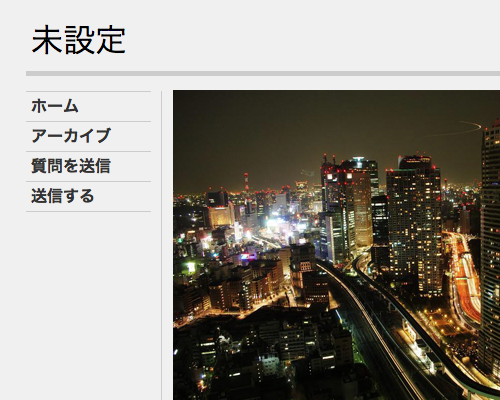

Backburner Theme Update
Later this week Backburner 1.3 will be released to support English, German, Japanese, French and Italian.
Tumblr Themes now available in 5 languages
Starting today, you can switch all of Tumblr’s featured and premium themes between English, German, Japanese, French, and Italian.
Just use the Language menu under Customize → Advanced.